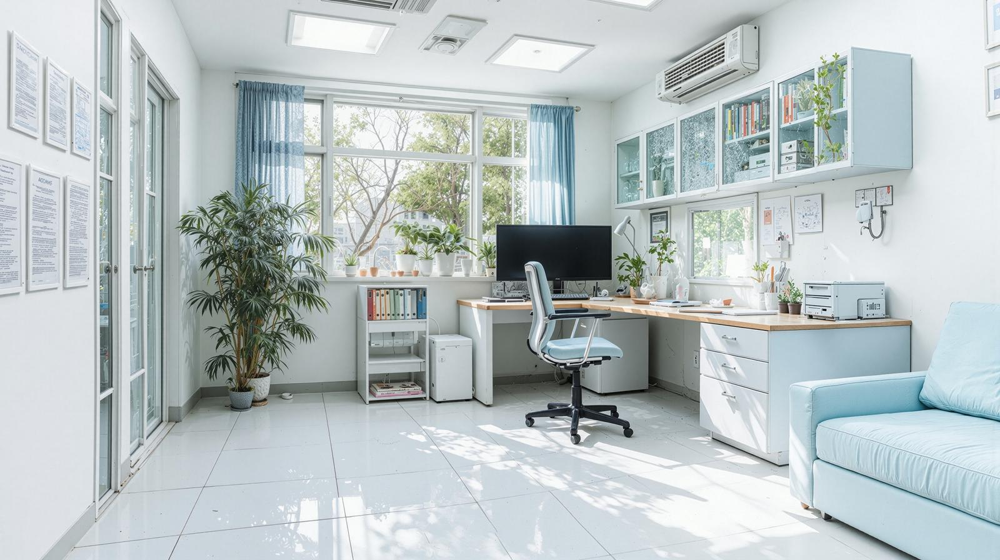

088-833-9999

ご来院の際は、マイナンバーカード・お薬手帳をお持ちください。
各種カード決済（VISA, JCB, MasterCardなど）にも対応しております。
088-833-9999
〒781-8008 高知県高知市潮新町2丁目1-50
とさでん交通桟橋線「桟橋通二丁目」停留場から徒歩6分
駐車場4台あり
| 診療時間 | 月 | 火 | 水 | 木 | 金 | 土 | 日 |
|---|---|---|---|---|---|---|---|
| 9:00 - 12:30 | ○ | ○ | ○ | ○ | ○ | ○ | ／ |
| 14:00 - 18:00 | ○ | ○ | ／ | ○ | ○ | ／ | ／ |
水曜午後、土曜午後、日曜・祝日は休診です。